У каждого сотрудника компании есть свой профиль пользователя. В нём содержатся контактные данные, дата рождения, фотография. В профиле можно задать персональные настройки оповещений и отображения задач, привязать электронную почту к почтовому клиенту системы, скачать приложение ELMA365 для компьютера и т. д.
Перейти к своему профилю можно с любой страницы системы. Для этого в правом верхнем углу экрана нажмите на ваше имя или аватар. Выберите пункт меню:
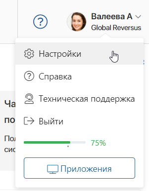
- Настройки — переход к профилю и настройкам. Здесь вы можете изменить свои личные данные и задать персональные параметры. Все настройки сгруппированы по вкладкам: Профиль, Аутентификация, Настройки, Оповещения, Задачи, Календарь, Документооборот, Почта, Приложение, Подписи и Внешние приложения;
- Справка — ссылка на справочный центр, где вы можете найти подробное описание всех настроек системы;
- Техническая поддержка — доступ к чату технической поддержки в облачной редакции ELMA365 для пользователей, входящих в группу Администраторы. В ELMA365 On‑Premises можно воспользоваться кнопкой Техподдержка на главной странице и открыть внешний портал, где предоставляется поддержка для компании;
- Выйти — выход из учётной записи ELMA365;
- 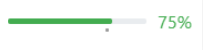 — шкала вашей исполнительской дисциплины;
- Приложения — переход к информации о версиях приложения ELMA365 для компьютера и смартфона.
Кнопка не отображается, если администратор системы отключил в настройках компании возможность устанавливать приложение ELMA365.
Рассмотрим подробнее, какие опции доступны в настройках профиля пользователя.
Профиль
На этой вкладке содержатся ваши персональные данные: ФИО, фотография, дата рождения и контактная информация. Также вы можете добавить свои учётные записи в мессенджерах.
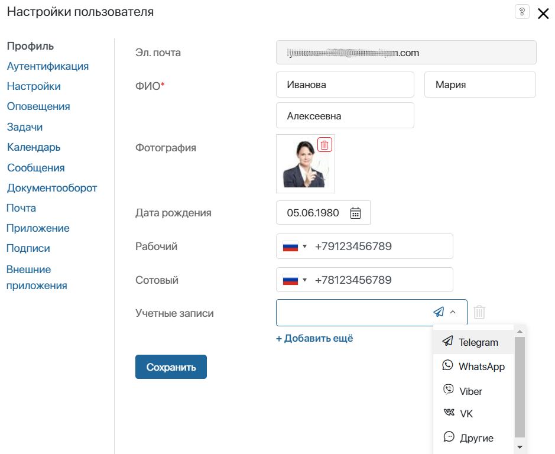
Аутентификация
Вкладка отображается, если настроен пользовательский модуль авторизации OAuth2. С его помощью пользователи могут регистрироваться и входить в ELMA365 через сторонние сервисы, например, соцсеть ВКонтакте.
Чтобы привязать к своему аккаунту учётную запись стороннего сервиса, нажмите Привязать.
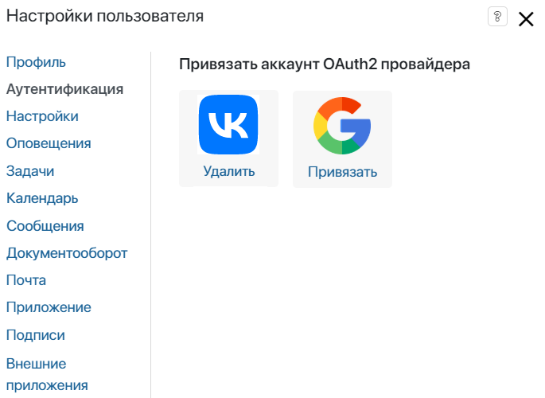
Если аккаунт привязан, то вы можете войти в систему через сторонний сервис. Для этого нажмите Войти другим способом. В открывшемся окне выберите нужный сервис и введите его логин и пароль.

Отвязать аккаунт
Обратите внимание, к вашему аккаунту ELMA365 можно привязать только одну стороннюю учётную запись.
Чтобы заменить один сервис для входа в систему на другой:
- Рядом со значком привязанного сервиса нажмите Удалить.
- Выберите другой доступный сервис и нажмите Привязать.
Важно: если ваш аккаунт создан через сторонний сервис, т. е. вы не регистрировались напрямую в системе, то вход в ELMA365 возможен только через этот сервис. В этом случае кнопка Удалить не отобразится, и вы не сможете изменить один сторонний сервис на другой.
Настройки
На этой вкладке вы можете изменить язык интерфейса, а также установить первый день недели и часовой пояс.
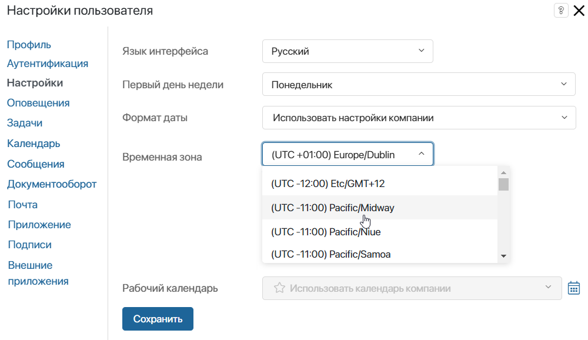
- Язык интерфейса — по умолчанию доступны следующие языки:
- русский и английский — если вы используете поставку SaaS;
- русский, английский, испанский и немецкий — для поставки On-Premises.
Если администратор системы установил дополнительные локали, они отобразятся в списке, и вы сможете их выбрать;
- Первый день недели — укажите день недели, который будет отображаться в календарях как первый. Доступны понедельник или воскресенье;
- Формат даты — выберите подходящий вариант отображения даты или используйте формат, настроенный для компании;
- Временная зона — измените часовой пояс, например, на время командировки или при удалённой работе. Если ваш часовой пояс отличается от пояса компании, вы можете быстро выбрать значение со своего локального компьютера. Для этого нажмите Установить из данного устройства. При назначении задач время автоматически рассчитывается с учётом вашего часового пояса;
- Рабочий календарь — в поле отображается рабочий календарь, который администратор системы закрепил за вами. Указанное рабочее время автоматически применяется при назначении задач. Вы также можете ознакомиться с запланированными изменениями графика работы, используя кнопку .
Оповещения
Вы можете включать или отключать всплывающие оповещения о новых сообщениях в чатах или каналах, а также управлять push‑уведомлениями от браузера. Подробнее о том, как это сделать, читайте в статье «Персональные настройки оповещений».
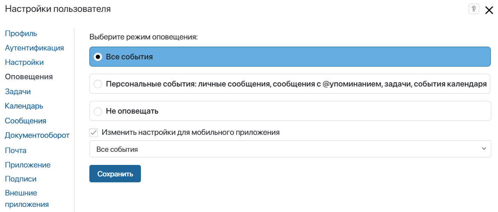
Задачи
На этой вкладке вы можете управлять отображением задач CRM, включить отправку оповещений о новых задачах на электронную почту, а также настроить напоминания о задачах и скрыть группу проектных задач.
начало внимание
Настройки задач CRM доступны только для пользователей с лицензией решения CRM, настройки проектных задач — для пользователей с лицензией ELMA365 Проекты.
конец внимание
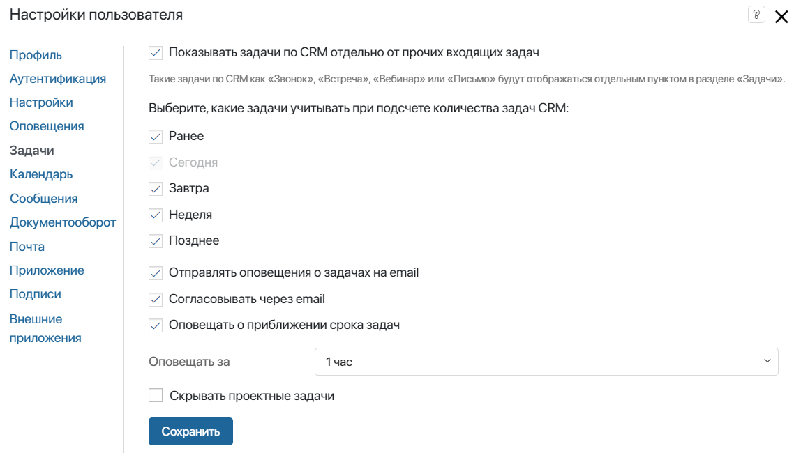
- Показывать задачи по CRM отдельно от прочих входящих задач — включите опцию, чтобы добавить в раздел Задачи группу Задачи CRM, куда войдут задачи типа Звонок, Встреча, Вебинар, Письмо, назначенные на вас по сделкам, лидам, компаниям и т. д.
Счётчик в разделе Задачи > Задачи CRM будет показывать число незакрытых задач CRM. Укажите, какие задачи учитывать при подсчёте:
- Ранее — все незавершённые, назначенные на вас до текущей даты;
- Сегодня — поставленные на текущую дату. Эта опция выбрана по умолчанию;
- Завтра — назначенные до следующего дня после текущей даты;
- Неделя — со сроком выполнения до семи дней, начиная с текущей даты;
- Позднее — со сроком выполнения восемь дней и более, начиная с текущей даты.
- Отправлять оповещения о новых задачах на email — включите отправку уведомлений о новых задачах на электронный адрес, указанный на вкладке Профиль. В оповещении отобразятся детали задачи и ссылка для быстрого перехода к ней в системе. По умолчанию применяются настройки оповещений, которые установил администратор.
Для получения уведомлений о задачах, назначаемых в рамках бизнес-процесса, в настройках блока Задача, Создание элемента или Изменение элемента должна быть включена опция Оповещение;
- Согласовывать через email — включите отправку задач согласования файлов, пакетов документов и элементов приложений. В письме вы можете просмотреть отправленный файл и вынести резолюцию, не переходя в интерфейс ELMA365. Обратите внимание, чтобы опция работала, администратору нужно привязать адрес корпоративной электронной почты, с которой будут автоматически отправляться оповещения о входящих задачах;
- Оповещать о приближении срока задач — включите опцию, чтобы получать напоминания о задачах, срок которых ограничен. Выберите, за какое время до окончания срока задач вы хотите получать уведомления в #ленту;
- Скрывать проектные задачи — вы можете скрыть группу Проектные задачи в разделе Задачи для удобства, если не работаете с таким типом задач. Также можно отобразить группу, если она скрыта в настройках администрирования системы.
Календарь
Вы можете настроить оповещения о событиях, созданных в личном календаре. Они будут приходить в #ленту или на электронную почту.
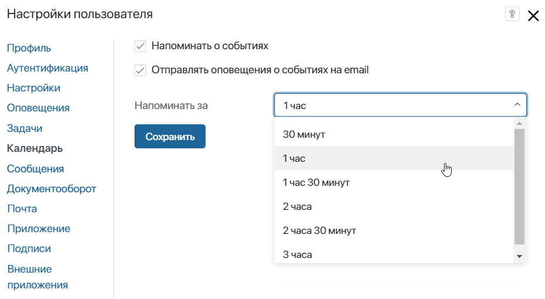
- Напоминать о событиях — выберите эту опцию, чтобы получать оповещения о приближающихся событиях;
- Отправлять оповещения о событиях на email — включите отправку уведомлений о событиях и их изменениях на электронный адрес, указанный на вкладке Профиль. В оповещении вы увидите все детали предстоящего события. По умолчанию применяются настройки оповещений, которые установил администратор;
- Напоминать за — укажите, за какое время до начала события вы хотите получать уведомления.
Документооборот
На этой вкладке вы можете выполнить такие настройки:
- скрыть задачи ознакомления и согласования с ограниченным сроком выполнения из календаря, чтобы сделать его менее загруженным;
- показать количество элементов в строке поиска в разделе Номенклатура дел. Эта опция по умолчанию выключена для ускорения загрузки страницы.
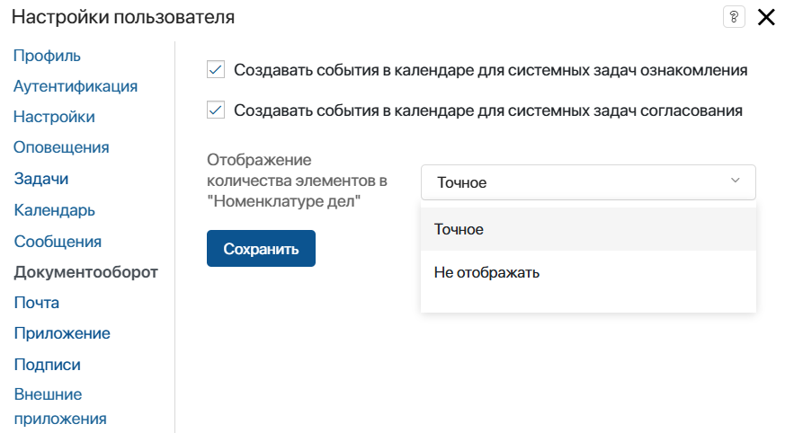
Сообщения
На этой вкладке вы можете включить ленту по объектам, чтобы просматривать всю переписку из ленты отдельной задачи, файла или элемента приложения прямо в разделе Сообщения. Это удобно, например, если вы постоянно работаете с обращениями или заявками. Подробнее о работе с такой лентой читайте в статье «Лента по объектам».
Поставьте флажок напротив опции, чтобы активировать ленту по объектам. Сообщения будут сгруппированы по категориям: чаты, объекты, избранное. Если опция отключена, то все сообщения отображаются в #ленте в хронологическом порядке, от новых к старым.
В списке исключённых объектов перечислены приложения, процессы и задачи, сообщения по которым не показываются в вашей ленте по объектам. Чтобы снова получать по ним сообщения, наведите курсор на объект и нажмите на появившийся значок корзины.
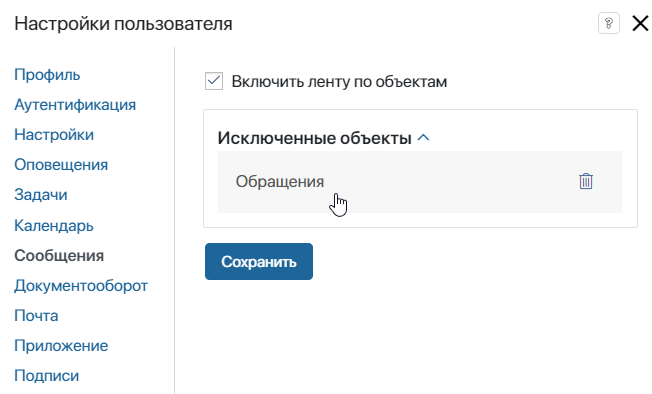
Почта
На этой вкладке персональная электронная почта подключается к встроенному в ELMA365 почтовому клиенту. Входящие и исходящие письма будут отображаться в разделе Почта. Вы сможете вести переписку с клиентами и партнерами из интерфейса системы. При этом вся история взаимодействия будет сохраняться.
начало внимание
Настройки почты доступны только для пользователей с лицензией решения CRM.
конец внимание
Интеграцию можно настроить с одним аккаунтом, доступны следующие сервисы: Gmail, Mail.ru, Yandex, Rambler, Yahoo, Outlook, Office365. Также вы можете синхронизировать почту с корпоративным доменом по протоколам SMTP и IMAP.
При подключении почты вы можете включить дополнительные параметры:
- Настройка оповещений о новых письмах — включите всплывающие уведомления о входящих письмах для ELMA365 на компьютере и в мобильном приложении;
- Настройка использования почты в бизнес-процессах — разрешите отправку писем с вашего адреса в ходе процессов с помощью блока Отправка личного email.
Подробнее о настройках читайте в статье «Подключить почту».
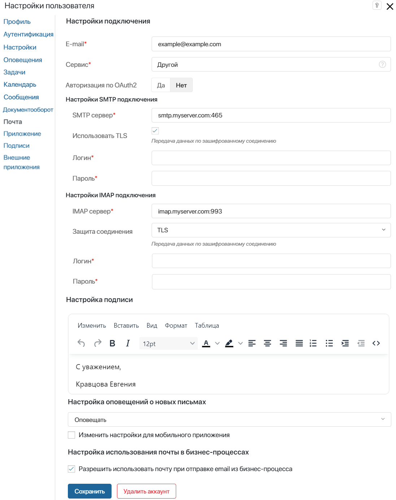
Приложение
В ELMA365 можно работать через приложения для ПК, подходящие для разных версий операционных систем Windows, macOS и Linux, а также со смартфона, скачав приложение из App Store или Google Play. Быстро войти в свой аккаунт можно с помощью QR‑кода.
Вкладка Приложение не отображается, если администратор системы в настройках компании отключил возможность устанавливать приложение ELMA365.
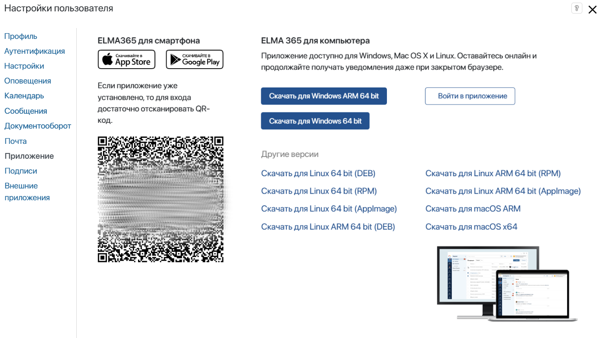
Подписи
На этой вкладке отображаются ваши сертификаты электронных подписей. Вы можете:
 — посмотреть информацию о сертификате;
— посмотреть информацию о сертификате;- — скачать сертификат;
-
 — выбрать сертификат, который будет использоваться по умолчанию для подписания документов.
— выбрать сертификат, который будет использоваться по умолчанию для подписания документов.
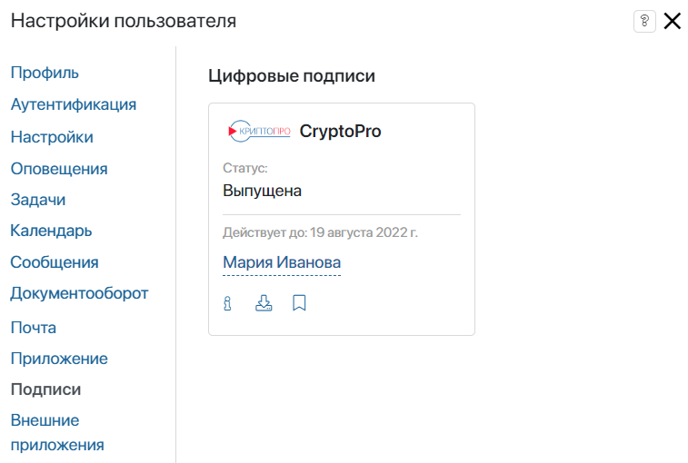
Внешние приложения
Администратор системы может настроить внешнее приложение в модуле, которое подключает к компании сторонний сервис. Пользователи смогут предоставлять сервису доступ к защищённым ресурсам ELMA365 по протоколу авторизации OAuth2. Например, таким образом можно выполнять аутентификацию на стороннем сайте с помощью логина и пароля от вашего аккаунта в ELMA365 или создавать элементы приложений, используя Web API.
Когда вы разрешаете доступ сервису к ресурсам ELMA365 и выполняете запрос на получение данных, запись об этом сохраняется в вашем профиле пользователя на вкладке Внешние приложения.
На вкладке указывается название внешнего приложения и дата последнего соединения сервиса и ELMA365. Вы можете разорвать подключение, чтобы ресурсы больше не передавались в сторонний сервис. Для этого напротив записи нажмите кнопку Отозвать доступ.
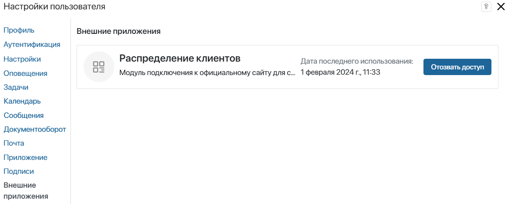